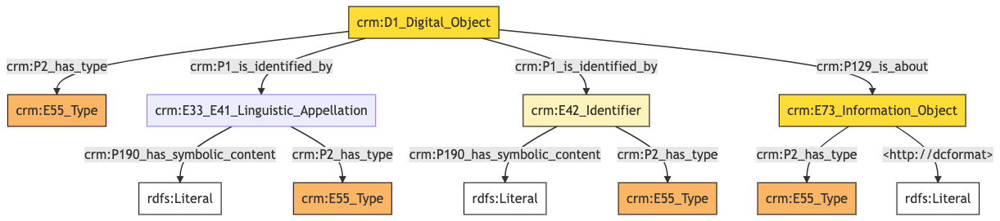
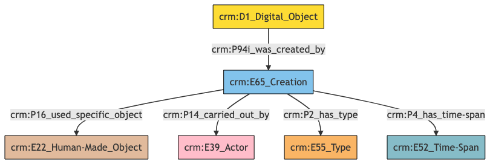

Digital Object
Author: Denitsa Nenova, George Bruseker
Version: 1.0
The Digital Object reference data model provides a list of standard fields that are typically present in the general description of a Digital Object in a cultural heritage data system. A Digital Object is meant in the sense of a digitally encoded information object represented as bit sequences that have been encoded with a particular format and can be digitally decoded and represented to an end user of a digital information system. Digital Objects are often stored as reference or documentation objects relative to cultural heritage items such as textual descriptions stored as PDFs, documentary images, 3D representations and so on. Digital Objects can also form cultural heritage objects in their own right, though this model does not aim to represent this potential aspect of the Digital Object. Because of the choice to model, the Digital Object in its role as a secondary documentary resource, the reference data model has been kept as light as possible.
| Name | URI | |
|---|---|---|
| Root Ontology Node | D1 Digital Object | https://cidoc-crm.org/Entity/D1-Digital Object/version-7.1.1 |
| Type Differentiator | N/A | N/A |
Model Sections Description
| Information Category | Information Collections | Description |
|---|---|---|
| Names and Classifications | Names/Alternative Names/Identifiers/Type | The researcher can document various names and classification regarding the Digital Object. |
| Existence | Creation | The researcher can document the cretaion of the Digital Object. |
Digital Object Names and Classifications
The attribution of identifiers, names and types to a Digital Object, as with other entities, is a basic human activity. It is crucial to document these aspects in order to be able to store and retrieve the correct Digital Object.
| Filed ID | Name | Description | Data Type | CRM Path |
|---|---|---|---|---|
| LAF.10 | Digital Object Identifier | This field is used to record an identifier attributed to the documented Digital Object. | String | ->p1->E42[8_1]->p190->rdf:literal |
| LAF.9 | Digital Object Identifier type | This field is used to record the type of the identifier attributed to the documented Digital Object. | Concept | ->p1->E42[8_1]->p2->E55[9_1] |
| LAF.6 | Digital Object Name | This field is used to record the string value of the name attributed to the documented Digital Object. | String | ->p1->E33_E41[4_1]->p190->rdf:literal |
| LAF.5 | Digital Object Name type | This field is used to record the type of the name attributed to the documented Digital Object. | Concept | ->p1->E33_41[4_1]->p2->E55[5_1] |
| LAF.11 | Digital Object Type | This field is used to record the formal type of the documented Digital Object. | Concept | ->p2->E55[11_1] |
| LAF.114 | Digital Object File Type | This field is used to record the formal file type of the documented Digital Object. | Concept | ->p129->E73[112_1]->p2->E55[114_1] |
| LAF.115 | Digital Object File Format | This field is used to record the file format of the documented Digital Object . | String | ->p129->E73[112_1]->dc:format->rdf:literal |
- Digital Object Names and Classifications Ontology Graph

- Digital Object Names and Classifications RDF
@prefix crm: <http://www.cidoc-crm.org/cidoc-crm/> .
@prefix dc: <http://dc> .
@prefix rdfs: <http://www.w3.org/2000/01/rdf-schema#> .
<https://pma.us/models/digital_resources/D1> a crm:D1_Digital_Object ;
crm:P129_is_about <https://linked.art/example/conceptual_object/112_1> ;
crm:P1_is_identified_by <https://linked.art/example/conceptual_object/4_1>,
<https://linked.art/example/conceptual_object/8_1> ;
crm:P2_has_type <https://linked.art/example/type/11_1> .
<http://vocab.getty.edu/page/aat/300404670> a crm:E55_Type ;
rdfs:label "preferred terms" .
<https://linked.art/example/conceptual_object/112_1> a crm:E73_Information_Object ;
dc:format "format_value" ;
crm:P2_has_type <https://linked.art/example/type/114_1> .
<https://linked.art/example/conceptual_object/4_1> a crm:E33_E41_Linguistic_Appellation ;
crm:P190_has_symbolic_content "Name_string_value" ;
crm:P2_has_type <http://vocab.getty.edu/page/aat/300404670> .
<https://linked.art/example/conceptual_object/8_1> a crm:E42_Identifier ;
crm:P190_has_symbolic_content "Identifier_value_content" ;
crm:P2_has_type <https://linked.art/example/identifier/9_1> .
<https://linked.art/example/identifier/9_1> a crm:E55_Type .
<https://linked.art/example/type/114_1> a crm:E55_Type .
<https://linked.art/example/type/11_1> a crm:E55_Type .
- Digital Object Names and Classifications JSON-LD
{
"@context": "https://linked.art/ns/v1/linked-art.json",
"@graph": [
{
"classified_as": [
"http://vocab.getty.edu/page/aat/300404670"
],
"content": "Name_string_value",
"id": "https://linked.art/example/conceptual_object/4_1",
"type": "Name"
},
{
"classified_as": [
"https://linked.art/example/identifier/9_1"
],
"content": "Identifier_value_content",
"id": "https://linked.art/example/conceptual_object/8_1",
"type": "Identifier"
},
{
"_label": "preferred terms",
"id": "http://vocab.getty.edu/page/aat/300404670",
"type": "Type"
},
{
"id": "https://linked.art/example/identifier/9_1",
"type": "Type"
},
{
"about": [
"https://linked.art/example/conceptual_object/112_1"
],
"classified_as": [
"https://linked.art/example/type/11_1"
],
"id": "https://pma.us/models/digital_resources/D1",
"identified_by": [
"https://linked.art/example/conceptual_object/8_1",
"https://linked.art/example/conceptual_object/4_1"
],
"type": "crm:D1_Digital_Object"
},
{
"id": "https://linked.art/example/type/11_1",
"type": "Type"
},
{
"classified_as": [
"https://linked.art/example/type/114_1"
],
"http://dcformat": "format_value",
"id": "https://linked.art/example/conceptual_object/112_1",
"type": "InformationObject"
},
{
"id": "https://linked.art/example/type/114_1",
"type": "Type"
}
]
}
Digital Object Existence
Of essential import in identifying and tracking a Digital Object are its creation and modification information. The model presented allows the tracking of the machine event which originally created the Digital Object as well as subsequent machine events of a modifying character of which it was the output. The destruction of the Digital Object is not modelled as being irrelevant to the use scope of integrated CH reference documentation.
| Filed ID | Name | Description | Data Type | CRM Path |
|---|---|---|---|---|
| LAF.86 | Digital Object Created by | This field is used to link the documented Digital Object creation activity to an actor responsible for carrying it out. | Reference Model [Person/Group] | ->P94i->E65[71_1]->P14->E39[86_1] |
| LAF.89 | Digital Object Created using | This field is used to link the documented Digital Object creation activity to an instance of physical object used in the exercise of this activity in a manner consequential to its outcome. | Reference Model [Object] | ->P94i->E65[71_1]->P16->E22[89_1] |
| LAF.91 | Digital Object Creation type | This field is used to record the formal type of the documented Digital Object creation activity. | Concept | ->P94i->E65[71_1]->P2->E55[91_1] |
| LAF.90 | Digital Object Creation time | This field is used to link the documented Digital Object creation activity to an instance of time-span recording the temporal extent of the activity. | Collection [Timespan] | ->P94i->E65[71_1]->P4->E52[90_1] |
- Digital Object Existence Ontology Graph

- Digital Object Existence RDF
@prefix crm: <http://www.cidoc-crm.org/cidoc-crm/> .
<https://pma.us/models/digital_resources/D1> a crm:D1_Digital_Object ;
crm:P94i_was_created_by <https://linked.art/example/event/71_1> .
<https://linked.art/example/actor/86_1> a crm:E39_Actor .
<https://linked.art/example/event/71_1> a crm:E65_Creation ;
crm:P14_carried_out_by <https://linked.art/example/actor/86_1> ;
crm:P16_used_specific_object <https://linked.art/example/physical_object/89_1> ;
crm:P2_has_type <https://linked.art/example/type/91_1> ;
crm:P4_has_time-span <https://linked.art/example/time_span/90_1> .
<https://linked.art/example/physical_object/89_1> a crm:E22_Human-Made_Object .
<https://linked.art/example/time_span/90_1> a crm:E52_Time-Span .
<https://linked.art/example/type/91_1> a crm:E55_Type .
- Digital Object Existence JSON-LD
{
"@context": "https://linked.art/ns/v1/linked-art.json",
"@graph": [
{
"created_by": "https://linked.art/example/event/71_1",
"id": "https://pma.us/models/digital_resources/D1",
"type": "crm:D1_Digital_Object"
},
{
"id": "https://linked.art/example/actor/86_1",
"type": "Actor"
},
{
"id": "https://linked.art/example/time_span/90_1",
"type": "TimeSpan"
},
{
"carried_out_by": [
"https://linked.art/example/actor/86_1"
],
"classified_as": [
"https://linked.art/example/type/91_1"
],
"id": "https://linked.art/example/event/71_1",
"timespan": "https://linked.art/example/time_span/90_1",
"type": "Creation",
"used_specific_object": [
"https://linked.art/example/physical_object/89_1"
]
},
{
"id": "https://linked.art/example/physical_object/89_1",
"type": "HumanMadeObject"
},
{
"id": "https://linked.art/example/type/91_1",
"type": "Type"
}
]
}